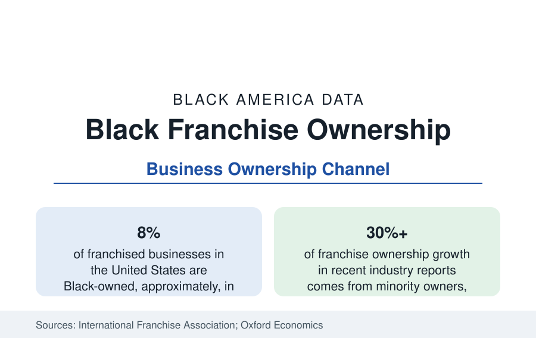

Black Business
Black Franchise Ownership: Buying Into Proven Systems
Black entrepreneurs own roughly 8 percent of America's franchised businesses — a growing ownership channel that trades independence for a proven model. The industry data.

Franchising is the ownership channel through which a meaningful share of Black business ownership is built: Black entrepreneurs own roughly 8 percent of the franchised businesses in the United States in the industry counts — tens of thousands of restaurants, hotels, retail outlets, service businesses, and home-service operations run under national brands. The model answers the financing section's problem in a particular way: a franchisor's proven system and lender familiarity substitute for a founder's track record, at the price of fees, royalties, and constrained independence. This article reports the franchise ownership data.
Why Franchising Fits the Constraint Set
The industry's own research and the lending literature converge on the mechanism. A first-time founder with a thin credit file faces the approval data of the previous article; the same founder presenting a franchise agreement with a national system — documented unit economics, franchisor training, and in many systems preferred lender relationships and SBA-registered concepts — presents a legible risk that banks approve at higher rates. The franchise channel thus routes around the information problem even where it cannot solve the capital problem outright: entry investments run from under a hundred thousand dollars for home-based service concepts to well above a million for full-service restaurants and hotels, financed typically through SBA loans, franchisor-arranged programs, and rollover retirement-fund structures that the industry reports as common among Black buyers.
Where Black Franchise Ownership Concentrates
The sector distribution is distinctive. Food service is the largest arena — quick-service restaurants above all, where Black operators have built multi-unit portfolios over decades, some of them among the largest franchisees in their systems — followed by hospitality (select-service hotels are a significant Black ownership segment in the industry data), automotive services, home services (cleaning, senior care, restoration), fitness, and education services. Multi-unit ownership is the industry's wealth tier, and the operator associations within the big systems — Black franchisee associations exist in most major restaurant systems — function as its professional infrastructure, negotiating with franchisors and mentoring entrants. The geographic distribution follows the Black population's: Southeast-weighted, metropolitan, suburbanizing with the general population.
The Economics, Honestly Stated
The data on franchise outcomes require the same care as the financing tables. Industry survival statistics favor franchised units over independent startups in most comparisons, though the comparison is contested in the academic literature and depends on system and sector. Royalty and marketing-fund obligations — typically a mid-single-digit to low-double-digit share of gross sales combined — compress margins in exchange for the brand's demand. Resale values for established units in strong systems are the channel's wealth engine: a multi-unit portfolio with documented cash flow trades at multiples an independent business of the same profit rarely commands, converting operating income into a saleable asset — the mechanism by which franchise ownership appears in the wealth data of successful operators. The risks are equally concrete: franchisor decisions on territory, remodels, and system sales sit outside the owner's control, and the industry's disclosure documents (the Franchise Disclosure Document every buyer receives) are the due-diligence record this reference directs readers to.
Growth and the Pipeline
Industry reporting across recent years records minority ownership growing faster than franchise ownership overall, with Black buyers a leading segment of that growth — driven by the corporate-career pipeline documented in the employment section (franchising as the exit ramp from management careers), by franchisor recruitment programs aimed at underrepresented owners, and by lender programs built for the channel. Veterans' franchise programs add an overlapping pipeline. The ownership share — about 8 percent against a 13.5 percent population share — remains the gap the industry's own publications track, and its closure rate is one of the business section's standing series.
Reading the Franchise Data
Franchising is best read as the market's negotiated settlement with the financing data: where independent founders face the credit wall unaided, the franchise system lends its balance-sheet credibility to the buyer, for a price, and Black ownership has grown through that gate faster than through most others. The 8 percent share, the multi-unit portfolios, and the resale market together make it the business section's most complete working model of ownership at scale — neither the whole answer nor a footnote.
The operator associations' own membership counts provide the annual check on these figures.
More in Black Business
Black-Owned Businesses: Counts, Receipts, and the Representation Gap
About 161,000 Black-owned employer firms and three million solo ventures: how the Census Bureau counts Black business ownership, where firms concentrate, and the gap between population share and business share.
Black Median Net Worth: The Wealth Gap in Federal Reserve Data
The Federal Reserve puts Black median family net worth at $44,900, against $285,000 for White families — about 16 cents on the dollar. The widest gap in economic data.
Black Buying Power: The $1.8 Trillion Consumer Economy
Black buying power is estimated at about $1.8 trillion — larger than the economy of most nations. What the figure measures, who produces it, and what it buys.
Source: International Franchise Association / Oxford Economics franchising reports; U.S. Census Bureau business data; company disclosures.